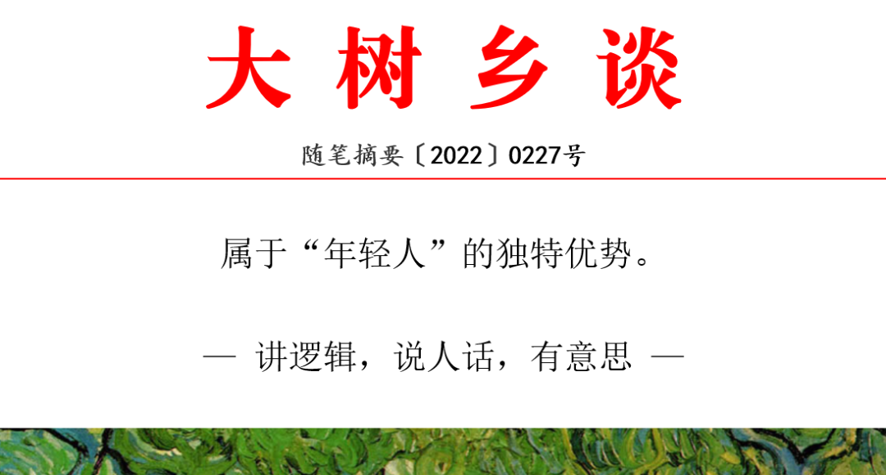

年轻人的“追赶者优势”

追赶者优势，这个应该不陌生吧。 常用在国家身上。开拓是需要试错的，一些领先国家花费了很大代价才能找到正确的路，还要为科技和模式的进步探索相应的伦理。而在后来者看来，如何能成功已经很清楚了，从一开始就可以看准先进国家已经实现的，然后摒弃一切歪路，走直线。 这当然效率极高，中国、韩国、日本以及很多国家都是这样的。 这个道理化用在个人上也是一样的。 比如在今天主条《一个改变普通人命运的大蓝海》提到的，温铁军当然是研究中国三农问题的权威，学习他的书、聆听他的教诲，我们可以极大减少探索需要花费的时间和精力，从一开始就站在巨人肩膀上。
我们对于三农的认知就更容易达到一个相当的高度，更容易把握乡村中的机遇。 然而一个人成就越高、年岁增长、地位越高，往往也会有一些负面作用。比如对于当今时代的新变化、新生事物的了解就会变弱，比不上更加积极有为的年轻人。 当然，也会有特例，比如很多部级以上很多领导，经历丰富、平台高格局大，也掌握很多一般人接触不到的信息，假如能保持年轻人的心态，有旺盛的好奇心和求知欲，那就很不一样了。 例如江小涓，今年已经65岁了，但之前常年从事政策制定和改革工作，曾任职国务院副秘书长，现在又在全国人大社会建设委员会和清华大学任职，对于数字经济的了解很深，思维灵敏、精力充沛超越大多数年轻人。
但这样的人有几个呢？对于大多数普通人来说，比较的对象当然是普通人。 改革开放几十年，60、70甚至80后的一些人，已经吃到了很多时代红利，再想复制成功不容易了，在城市扎根的门槛都高了很多。 但是年轻人自有优势，这里的年轻不看年龄，关键看心态、看求知欲。 比如未来的大蓝海：乡村振兴和乡村发展。 有志者可以通过大量阅读前辈对于三农的研究，很容易就达到一定的认知高度，然后结合自己对于时代的了解、新生事物的熟悉，更容易找到与时代结合的点。
这就是机遇。 当然，正如国家想要实现“追赶者优势“，也需要一定的基础，不是随便哪个国家都能复刻。 个人也是一样的，从来不会有从天而降的馅饼。
其他文章推荐
■ 旧机制与新变革
如果喜欢，还请点赞、“在看”和关注吧 欢迎分享，让更多人发现“大树乡谈”